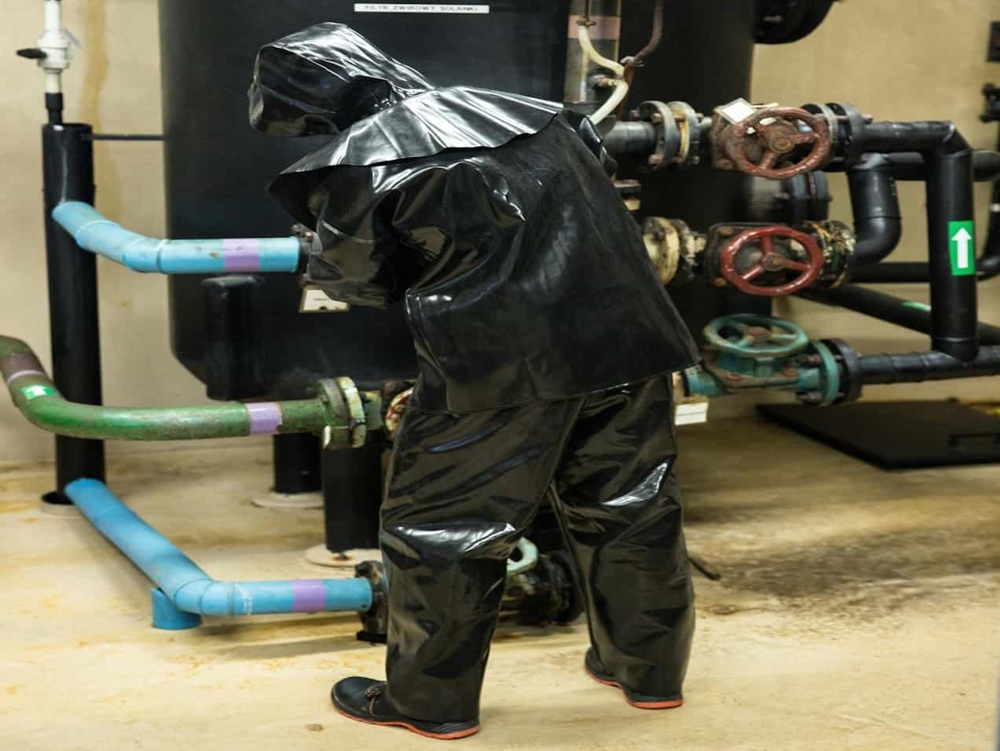
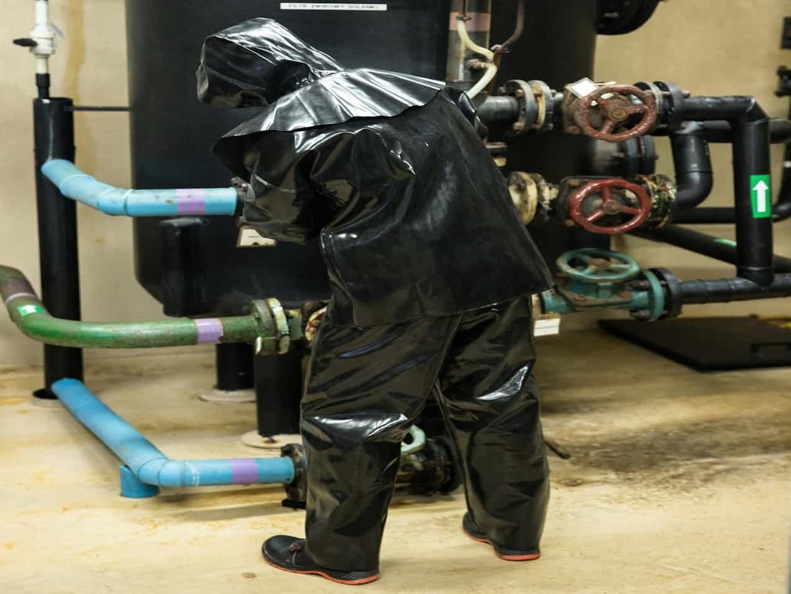

Moi. Olen teollisuuden kokenut ammattilainen, ja minulla on laaja kokemus kemian prosessiteollisuudesta, noin 15 vuoden ajalta. Kokemusta ja osaamista on kertynyt valvomo- ja kenttäoperaattorin tehtävistä.
Koulutuksena minulla on kemianteollisuuden perustutkinto ja ammattitutkinto.
Pisin ja viimeisin työkokemukseni on Kemira Chemicals Oy:n palveluksessa Sastamalassa, jossa työskentelin yhteensä 14 vuotta. Aluksi toimin hienokemikaalitehtaan operaattorina muutaman vuoden ajan, jonka jälkeen siirryin natriumkloraattitehtaan operaattoriksi. Toimenkuvani sisälsi valvomo- ja kenttäoperaattorin tehtäviä, kuten näytteenottoa ja analysointia, tuotteen lastauksia ja prosessinohjausta. Toimin myös toimipaikan tehdaspalokunnassa. Minulla on osaamista Emerson DeltaV, Valmet DNA ja Valmet DNAe -automaatiojärjestelmistä sekä SAP ERP -ohjelmistosta.
Olen myös työskennellyt tekstiiliteollisuudessa laitosmiehenä ja koneenhoitajana noin 6 vuoden ajan. Laitosmies tehtävissä toimin Ahlstrom Glassfibre Oy:n palveluksessa Mikkelissä sijaitsevilla tehtailla, joissa valmistettiin monenlaisia lasikuitumattoja pääasiassa tuulivoimala valmistajien raaka-aineeksi. Työnkuvaani laitosmiehenä kuului tuotantokoneiden tuotteen vaihdot, huollot ja korjaukset.
Tekstiiliteollisuuden koneenhoitajana työskentelin Intermedius Oy:n palveluksessa Tampereella noin 3 vuoden ajan. Intermedius Oy valmistaa tekstiilimateriaaleja monipuolisesti tekstiiliteollisuuden tuotevalmistajille. Toimenkuvani sisälsi pääasiassa koneenhoitajan tehtäviä huopakoneella, mutta ajoittain myös pituusleikkurilla tuurausta. Pienet korjaus- ja huoltotyöt kuuluivat myös toimenkuvaani. Työhöni sisältyi lisäksi tavaran vastaanottoa, pakkausta ja lähetystä.
 
